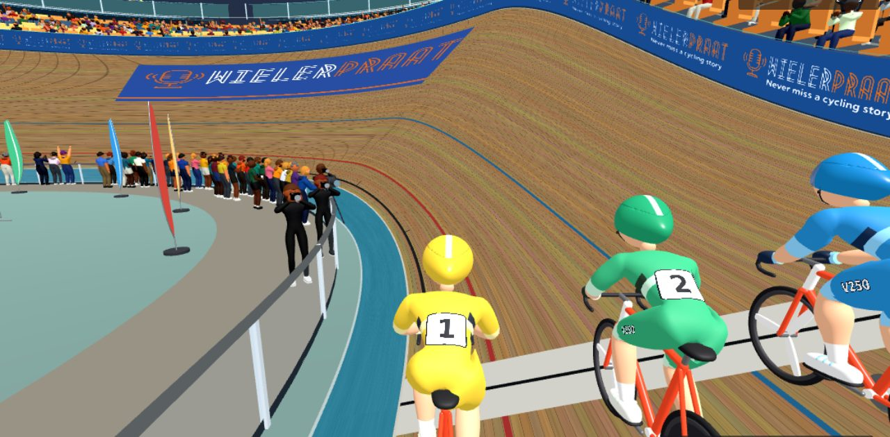

Scratch
One bunch. One finish.
Stay out of the wind, pick your moment and be first across the line. Taking a lap moves you ahead in the standings.
Seven disciplines are playable. You race a virtual peloton of riders who each have their own profile and race behaviour.

One bunch. One finish.
Stay out of the wind, pick your moment and be first across the line. Taking a lap moves you ahead in the standings.
Every sprint is a new chance.
A sprint every 10 laps scores 5, 3, 2 and 1 points; the finish counts double. Gaining a lap earns +20, losing one costs −20.
Every two laps, the last rider is out.
Whoever crosses the line last, judged by the rear wheel, is eliminated. Stay out of the danger zone without spending too long in the wind.
Follow the pace. Unleash your sprint.
Six riders with drawn start positions. Three laps behind the derny as it gradually speeds up, then three free laps. Stay on the wheel and choose when to go.
You, your opponent and the clock.
Two riders start on opposite sides of the track. Chase the best time or catch your opponent. Race a virtual opponent or one of your own saved rides. No drafting.
Chasing the fastest time together.
Ride with two or three virtual teammates. Steer right at the front to swap turns, then follow the power target. Manual resistance or ERG.
You against the clock.
500 m or 1 km from a standing or flying start, compared every 125 metres with your last ride or your personal best.
Take turns. Stay in the race.
Ride as a pair, hand each other in and fight together for points and laps. You can already practise the hand sling in track training.
Keep the pace high.
This discipline arrives in a later version.
Several races, one classification.
Ride a series of races back to back and add up your results.
Vélodrome keeps your best times locally: a top 10 for individual and team pursuit, and for the time trial your last ride, recent best and all-time best, kept separately per distance and start type. A saved pursuit ride can later be chosen as your opponent.